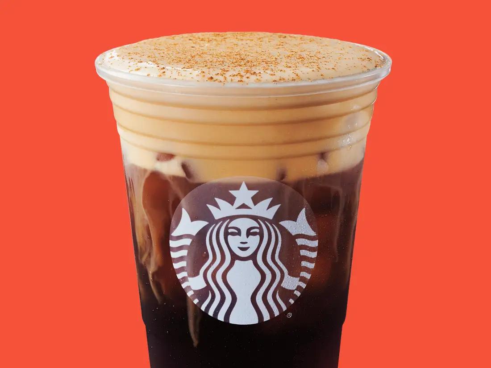
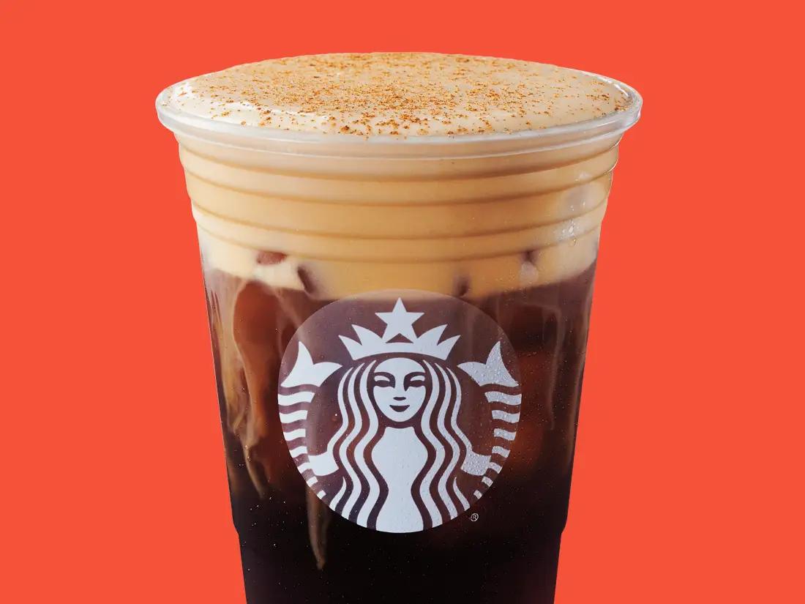

I like to drink and to make coffee. My favorite kinds of coffee to drink are iced caramel lattes and pumpkin spice cold brew from Starbucks.
I like to drink and to make coffee. My favorite kinds of coffee to drink are iced caramel lattes and pumpkin spice cold brew from Starbucks.
I also like to make coffee. I have my very own coffee station at home where I can make lattes and different espresso drinks! I am still working on perfecting my cold brew copy cat from Starbucks, but I will figure out a dupe eventually. I have recently been enjoying trying to make new recipes for different types of coffee. My favorite so far has been a honey and cinnamon latte. I am still in the works of perfecting my pumpkin spice for Fall but I know that I will get there soon!